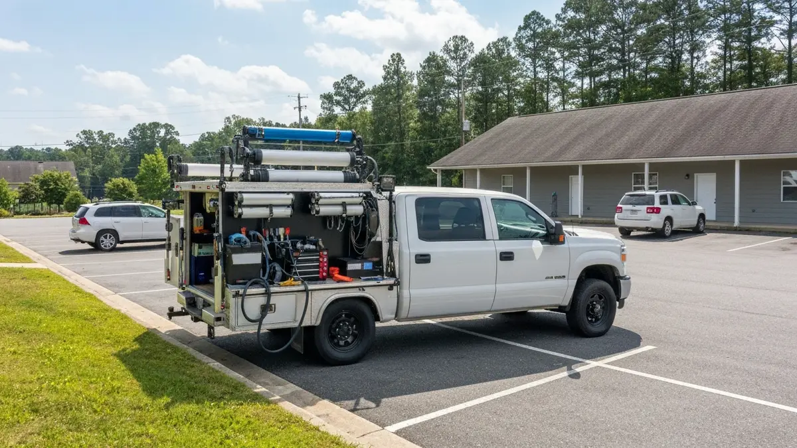

Auto Detailing in Ringgold, Georgia
Mobile Car Detailing in Ringgold, GA
Ringgold's unique position as a vibrant Georgia border community, with its blend of robust pickup trucks navigating local back roads, hardworking service vehicles, and numerous commuter cars braving I-75 daily to Chattanooga, creates a specific demand for convenient mobile detailing. The pervasive red clay typical of North Georgia, seasonal pollen, and the constant wear and tear from varied daily commutes mean vehicles here quickly accumulate dirt, dust, and grime. Traditional car washes often miss the deep cleaning needed, and driving to a detailer in Chattanooga adds precious time to already busy schedules. Our mobile service brings professional care directly to your Ringgold driveway or business, perfect for those who value both their time and their vehicle's immaculate appearance amidst the demands of local life.

Why Ringgold, GA Residents Choose Scenic City Detailing
Scenic City Detailing understands the specific environmental and lifestyle factors impacting vehicles in Ringgold, GA. Being part of the broader Chattanooga metro, we are intimately familiar with the local roads, typical vehicle types from the Catoosa County area, and the impact of our regional weather patterns. Our team often traverses Graysville Road, US-41, and neighborhoods near Battlefield Parkway, giving us firsthand knowledge of the conditions that challenge your vehicle's cleanliness and finish. We're not just a service provider; we're your local detailing experts.
For Ringgold homeowners and businesses, our mobile service offers unparalleled convenience. We eliminate the need to drive your vehicle across town or into Chattanooga, saving you valuable time in your busy schedule, whether you're commuting, managing a business, or enjoying family time. We come equipped with our own water and power, perfectly suited for homes with varied outdoor setups or businesses where on-site efficiency is key. This personalized, doorstep service is designed specifically for the busy, practical residents of Ringgold, GA.
Our Mobile Car Detailing Services in Ringgold, GA
- Exterior Deluxe Detail: Our comprehensive exterior service meticulously tackles the stubborn red clay, road grit from daily I-75 commutes, and pervasive seasonal pollen common in Ringgold. We meticulously wash, decontaminate, and apply a protective sealant to ensure your truck or commuter car looks its best and is shielded from the elements found around Ringgold.
- Interior Refresh & Protect: For Ringgold residents, vehicle interiors often face extra challenges from construction dust, pet hair from country living, or daily commute spills. Our interior detailing thoroughly cleans and sanitizes, removing grime from work boots, coffee stains from early morning drives, and keeping your vehicle's cabin fresh, comfortable, and protected for your next journey.
- Work Truck & Fleet Detailing: Understanding the prevalence of pickup trucks and work vehicles in Ringgold, this service is tailored to the demanding conditions these vehicles face. We focus on heavy-duty cleaning for exteriors and interiors, ensuring your fleet or personal work truck maintains a professional image and stands up to the rigors of Ringgold's mixed-use environment.
- Headlight Restoration: With vehicles often exposed to sun, humidity, and road debris along Ringgold's major thoroughfares like US-41, hazy headlights are a common issue. Our restoration service dramatically improves visibility for safer driving on poorly lit country roads and enhances your vehicle’s aesthetic, ensuring clarity for commutes to Chattanooga.
Serving Ringgold, GA and Surrounding Areas
Scenic City Detailing proudly serves the entire Ringgold, GA community, nestled in Catoosa County right on the Georgia-Tennessee border. Our service area extends across all of Ringgold, from the historic downtown square and its surrounding residential streets to the newer developments along Lafayette Road and the more rural properties off Graysville Road. We frequently detail vehicles for residents commuting into Chattanooga via I-75, as well as those living closer to local landmarks like the Ringgold Depot or the General Cleburne's Tunnel area. Whether you're near Battlefield Parkway, White Oak Road, or off US-41 (Ringgold Road), our mobile service brings premium car care directly to your location throughout this vital part of the Chattanooga metro area.
Frequently Asked Questions About Mobile Car Detailing in Ringgold, GA
How much does mobile car detailing cost in Ringgold, GA?
The cost varies based on the size of your vehicle and the specific services chosen, reflecting the diverse range from commuter cars to larger trucks common in Ringgold. Our pricing is competitive for the area, offering excellent value for the convenience and quality delivered directly to your home or business, eliminating travel time and fuel costs for you.
How long does mobile car detailing take for a typical Ringgold, GA home?
Most detailing services for a typical commuter car or family SUV in Ringgold take approximately 2-4 hours, depending on the package and vehicle condition. Larger vehicles like pickup trucks or those requiring extensive cleaning, common in this area, might take slightly longer to ensure thorough results.
Do you serve all of Ringgold, GA?
Yes, we proudly serve all neighborhoods and areas within Ringgold, GA. This includes downtown Ringgold, residential communities off Battlefield Parkway, properties along Graysville Road, and homes closer to the I-75 corridor. Our mobile units are fully equipped to reach you no matter where you're located in Ringgold.
Can you handle the North Georgia red clay and pollen unique to Ringgold, GA?
Absolutely. We specialize in combating the notorious North Georgia red clay and heavy seasonal pollen that are significant challenges for vehicles in Ringgold. Our advanced cleaning techniques and specialized products are specifically chosen to safely and effectively remove these stubborn contaminants, protecting your vehicle's finish and restoring its pristine appearance.
Ready to schedule your mobile car detailing service in Ringgold, GA? Call us today or use the contact form above — we serve Ringgold, GA and all surrounding areas of Chattanooga, TN. Most Ringgold, GA jobs are scheduled within 48-72 hours.
Get Your Free Auto Detailing Quote in Ringgold
Call or text today. Most vehicles scheduled within the week.